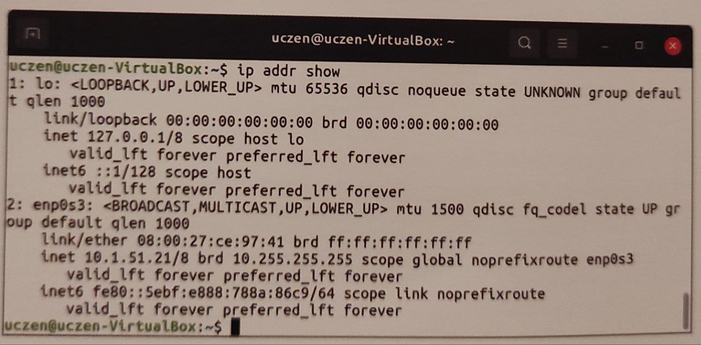
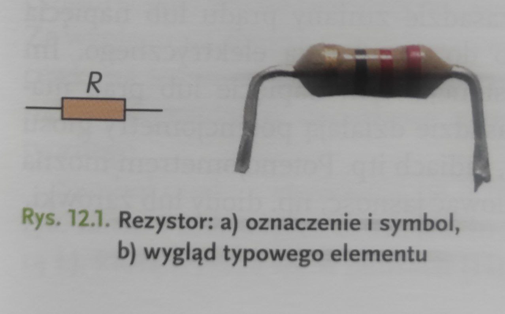
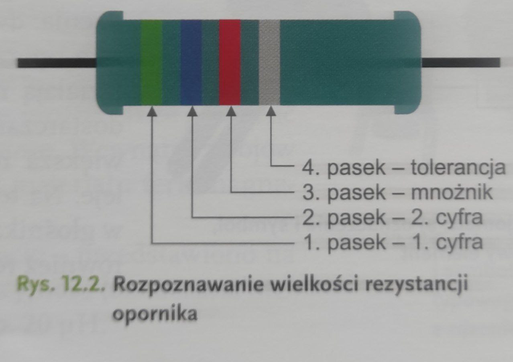
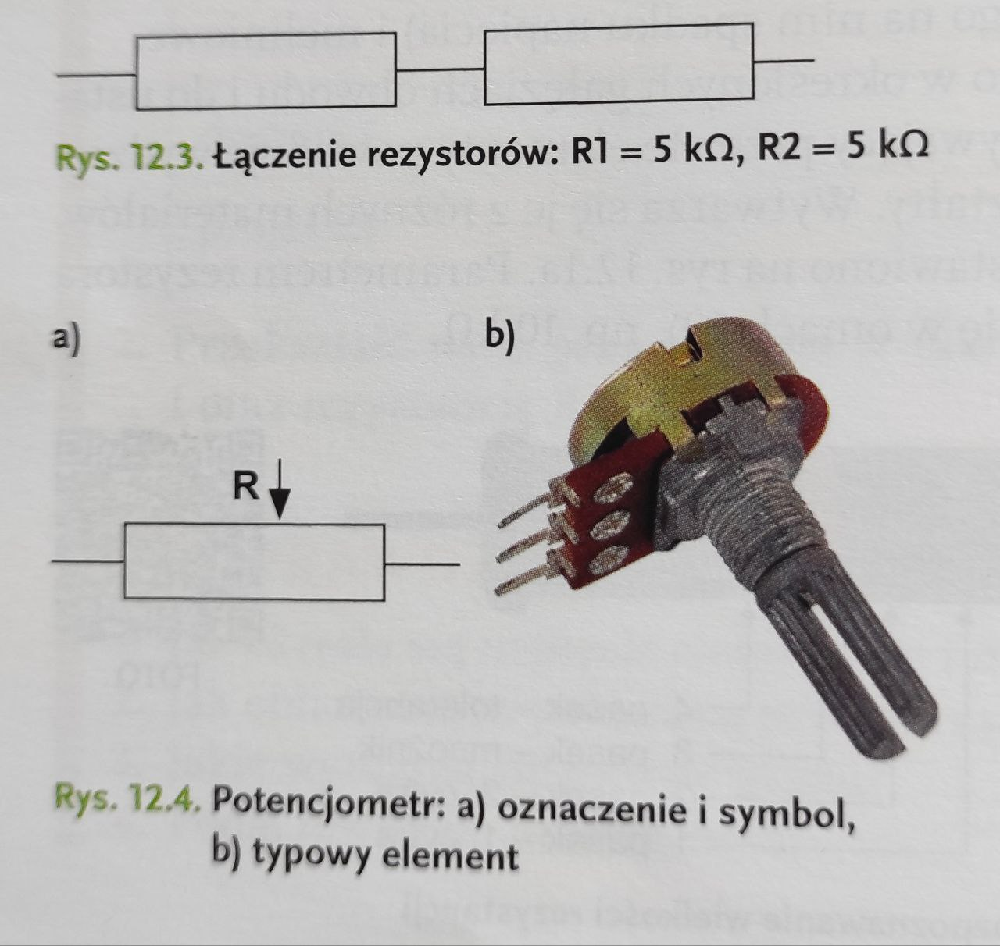
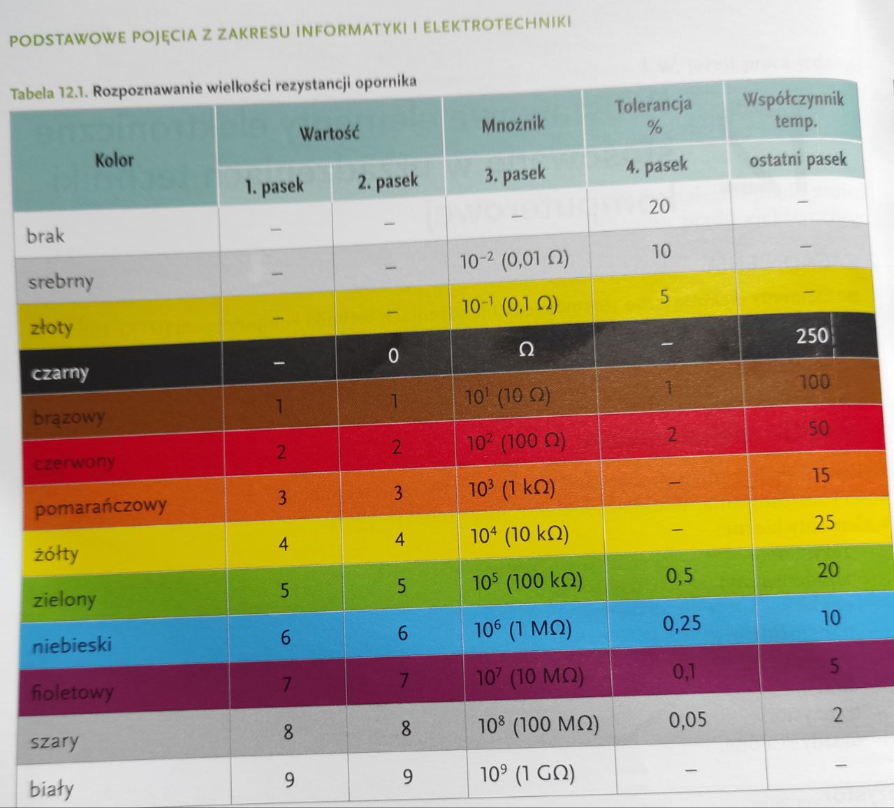
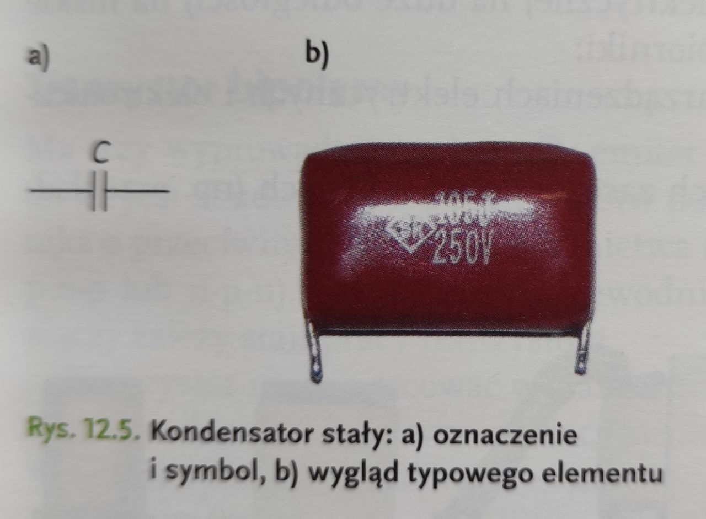
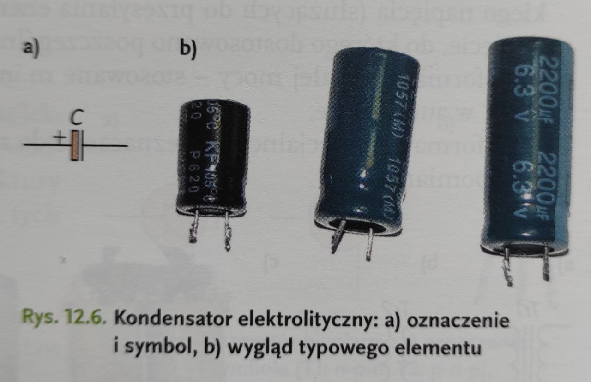

Konfigurowanie interfejsu sieciowego
Skonfigurowanie interfejsu sieciowego w systemie Linux Funkcja pakietu
narzędzi iproute2 Skonfigurowanie interfejsu sieciowego za pomocą
narzędzia ip Skonfigurowanie interfejsu sieciowego w środowisku
graficznym Narzędzia umożliwiające odwzorowanie nazw na adresy IP
Wpisy zawarte w przykładowym pliku /etc/hosts Metody testowania
połączenia sieciowego w systemie Linux Polecenie ping i sposoby
korzystania z niego Polecenie traceroute i sposoby korzystania z niego
Zabezpieczenie komputera przed dostępem osób nieuprawnionych Dostęp do
serwera dla wybranego komputera w sieci Linux jest systemem
operacyjnym zawierającym wszystkie składniki niezbędne do przyłączenia
do internetu lub zbudowania sieci lokalnej. Ze względu na stabilność
działania i dużą wydajność często używa się go jako systemu
operacyjnego serwerów w internecie. W dystrybucjach umieszcza się
wstępnie skonfigurowane serwery umożliwiające świadczenie usług,
takich jak udostępnianie stron WWW, FTP, poczty elektronicznej i wielu
innych. Korzystanie z sieci w systemie Linux jest możliwe po
wcześniejszym skonfigurowaniu ustawień dla interfejsu sieciowego.
Interfejs Ethernet w Linuksie składa się z karty sieciowej i programu
obsługi. Elementem sprzętowym jest karta sieciowa. Oprogramowanie
interfejsu Ethernet to program obsługi używany przez jądro systemu. W
celu wyświetlenia informacji o nazwach i konfiguracji interfejsów
sieciowych można użyć polecenia ip addr show (rys. 1.1).
Конфигурирование сетевого интерфейса
Конфигурирование сетевого интерфейса в системе Linux Функция пакета
инструментов iproute2 Конфигурирование сетевого интерфейса с помощью
инструмента ip Конфигурирование сетевого интерфейса в графической
среде Инструменты для сопоставления имен IP-адресам Записи,
содержащиеся в примере файла /etc/hosts Методы тестирования сетевого
соединения в системе Linux Команда ping и способы ее использования
Команда traceroute и способы ее использования Защита компьютера от
несанкционированного доступа Доступ к серверу для выбранного
компьютера в сети Linux - это операционная система, содержащая все
компоненты, необходимые для подключения к интернету или создания
локальной сети. Благодаря стабильности работы и высокой
производительности она часто используется в качестве операционной
системы серверов в интернете. В дистрибутивах содержатся
предварительно сконфигурированные серверы, позволяющие предоставлять
услуги, такие как размещение веб-страниц, FTP, электронная почта и
многие другие. Использование сети в системе Linux возможно после
предварительной настройки параметров для сетевого интерфейса.
Ethernet-интерфейс в Linux состоит из сетевой карты и драйвера.
Аппаратной частью является сетевая карта. Программное обеспечение
Ethernet-интерфейса - это драйвер, используемый ядром системы. Для
отображения информации о названиях и конфигурации сетевых интерфейсов
можно использовать команду ip addr show (рис. 1.1).

Rys. 1.2. Plik konfiguracyjny sieci z opisem interfejsu
W pliku zdefiniowano konfigurację interfejsu sieciowego enp0s3 - konfigurowanego statycz- nie. Dla każdego interfejsu sieciowego istnieje sekcja w pliku, w którym są przechowywane ustawienia konfiguracyjne, np. dla interfejsu enp0s3:
⚫️ dhcp4: no - nie będzie wykorzystywany serwer DHCP;
⚫️ addresses: [10.1.51.21/8] - adres IP i maska (można wprowadzić kilka adresów oddzielonych przecinkiem);
⚫️ gateway4: 10.1.1.1 - adres bramy sieciowej;
⚫️ nameservers: addresses: [8.8.8.8, 8.8.4.4] - adresy serwerów DNS.
UWAGA
Wcięcia w pliku konfiguracyjnym należy wykonać za pomocą spacji.
Po wprowadzeniu zmian w plikach konfiguracyjnych należy sprawdzić poprawność konfigu- racji i ponownie uruchomić interfejsy za pomocą poleceń:
sudo netplan try
sudo netplan apply
Рис. 1.2. Файл конфигурации сети с описанием интерфейса
Новый текст на русском языке

Новый заголовок для первой вкладки
Новый текст на польском
Новый русский заголовок
Новый текст на русском языке
Новый заголовок для первой вкладки
Новый текст на польском
Новый русский заголовок
Новый текст на русском языке
Новый заголовок для первой вкладки
Новый текст на польском
Новый русский заголовок
Новый текст на русском языке
Новый заголовок для первой вкладки
Новый текст на польском
Новый русский заголовок
Новый текст на русском языке
Новый заголовок для первой вкладки
Новый текст на польском
Новый русский заголовок
Новый текст на русском языке
Новый заголовок для первой вкладки
Новый текст на польском
Новый русский заголовок
Новый текст на русском языке
Новый заголовок для первой вкладки
Новый текст на польском
Новый русский заголовок
Новый текст на русском языке
Новый заголовок для первой вкладки
Новый текст на польском
Новый русский заголовок
Новый текст на русском языке
Новый заголовок для первой вкладки
Новый текст на польском
Новый русский заголовок
Новый текст на русском языке
Podstawowe elementy elektroniczne stosowane w urządzeniach techniki
komputerowej
Elementy elektroniczne. Wykonuje się je z różnych materiałów i według
różnych technologii, dlatego mają rózne właści wości i zastosowania. W
układach elektronicznych występują ⚫ elementy bierne rezystory.
kondensatory, cewki: transformatory:⚫ elementy czynne: diody:
tranzystory, układy scalone. Rezystor Rezystor (potocznie: opornik)
jest elementem biernym obwodu elektrycznego. Zależnie od cha
rakterystyki prądowo-napięciowej wyróżnia się rezystory liniowe (gdy
prąd płynący przez taki rezystor jest wprost proporcjonalny do
występującego na nim spadku napięcia) i nieliniowe. Rezystory służą do
ograniczania prądu płynącego w określonych gałęziach obwodu i do usta
lania odpowiednich spadków napięcia. Prąd przepływający przez te
elementy powoduje wydzie lanie się ciepła. Rezystory mają różne
wymiary i kształty. Wytwarza się je z różnych materiałów. Symbol
rezystora stosowany na schemacie przedstawiono na rys. 12.1a.
Parametrem rezystora jest rezystancja (oznaczana literą R), którą
wyraża się w omach (0), np. 10 kl.
Основные электронные компоненты, используемые в устройствах
компьютерной техники
Электронные компоненты. Они изготавливаются из разных материалов и по
разным технологиям, поэтому имеют разные свойства и применение.
Электронные системы содержат: ⚫ пассивные элементы: резисторы;
конденсаторы: катушки; трансформаторы; ⚫ активные элементы: диоды:
транзисторы; интегральные схемы. Резистор Резистор (в просторечии:
резистор) — пассивный элемент электрической цепи. В зависимости от
вольт-амперных характеристик различают резисторы линейные (когда ток,
протекающий через такой резистор, прямо пропорционален падению
напряжения, происходящему на нем) и резисторы нелинейные. Резисторы
используются для ограничения тока, протекающего в определенных ветвях
цепи, и для установки достижение соответствующего падения напряжения.
Ток, протекающий через эти элементы, производит тепло. Резисторы
бывают разных размеров и форм. Они изготовлены из различных
материалов. Используемое на схеме обозначение резистора показано на
рис. 12.13. Параметр резистора – сопротивление (обозначается буквой
R), которое выражается в Омах.


PODSTAWOWE POJĘCIA Z ZAKRESU INFORMATYKI I ELEKTROTECHNIKI
Łączenie rezystorów:
Jeżeli potrzebujemy rezystora 10 ko, możemy połą- czyć szeregowo dwa rezystory po 5 ΚΩ.
Potencjometr:
Jest to regulowany rezystor. Ma on trzy wyprowa- dzenia: dwa z nich są połączone ze ścieżką o sta- łym oporze, a trzeci z regulowanym ślizgaczem. Działają na zasadzie zmiany prądu lub napięcia dostarczanego do urządzenia elektrycznego. Im większa rezystancja, tym napięcie lub prąd ma- leje. Na tej zasadzie działają potencjometry głosu w głośnikach, radiach itp. Potencjometrem można również regulować jasność, np. diody lub żarówki.
ОСНОВНЫЕ ПОНЯТИЯ В ОБЛАСТИ ИНФОРМАТИКИ И ЭЛЕКТРОТЕХНОЛОГИЙ
Подключение резисторов:
Если нам нужен резистор сопротивлением 10 кОм, мы можем соединить два резистора сопротивлением 5 кОм последовательно.
Потенциометр:
Это регулируемый резистор. Он имеет три контакта: два из них подключены к цепи постоянного сопротивления, а третий — к регулируемому ползунку. Они работают путем изменения тока или напряжения, подаваемого на электрическое устройство. Чем выше сопротивление, тем ниже напряжение или ток. По этому принципу работают голосовые потенциометры в колонках, радиоприемниках и т. д. Потенциометр также можно использовать для регулировки яркости, например, диодов или лампочек.

Tabela 12.1. Rozpoznawanie wielkości rezystancji opornika
Таблица 12.1. Определение значения сопротивления резистора

Kondensator, czyli element pojemnościowy obwodu elektrycznego, jest zbudowany z dwóch przewodników (okładzin), rozdzielonych warstwą dielektryka. Doprowadzenie napięcia do okła- dzin kondensatora powoduje zgromadzenie się na nich ładunku elektrycznego. Kondensatory można podzielić zależnie od ich przeznaczenia (m.in. przeciwzakłóceniowe, blokujące, sprzę- gające) i zastosowanego dielektryka (m.in. mikowe, ceramiczne, elektrolityczne, powietrzne). Symbole kondensatora stosowane na schemacie przedstawiono na rys. 12.5a i 12.6a. Ze względu na wymagania dotyczące polaryzacji napięcia kondensatory elektrolityczne mają sym- bol graficzny jak na rys. 12.6a. Parametrem kondensatora jest pojemność (oznaczana literą C), którą wyraża się w faradach (F), np. 100 µF.
Конденсатор, т. е. емкостный элемент электрической цепи, состоит из двух проводников (обкладок), разделенных диэлектрическим слоем. Подача напряжения на обкладки конденсатора приводит к накоплению на них электрического заряда. Конденсаторы можно разделить в зависимости от их назначения (например, помехоподавляющие, блокирующие, связывающие) и используемого диэлектрика (например, слюдяные, керамические, электролитические, воздушные). Обозначения конденсаторов, используемые на схеме, показаны на рисунках 12.5а и 12.6а. В связи с требованиями к поляризации напряжения электролитические конденсаторы имеют графическое обозначение, как на рис. 12.6а. Параметром конденсатора является емкость (обозначается буквой С), которая выражается в фарадах (Ф), например 100 мкФ.


Новый 22222222222заголовок для первой вкладки
Новый текст на польском
Новый русский заголовок
Новый текст на русском языке
Kwalifikacja INF.03 Tworzenie i administrowanie stronami i
aplikacijami internetowymi oraz bazami danych
Tekst po polsku
Russian Translation
Текст на русском языке

Новый заголовок для первой вкладки
Новый текст на польском
Новый русский заголовок
Новый текст на русском языке
Modern JavaScript for the Impatient
В этой вкладке вы найдете книгу "Modern JavaScript for the Impatient".
JavaScript. Подробное руководство
В этой вкладке вы найдете подробное руководство по JavaScript.